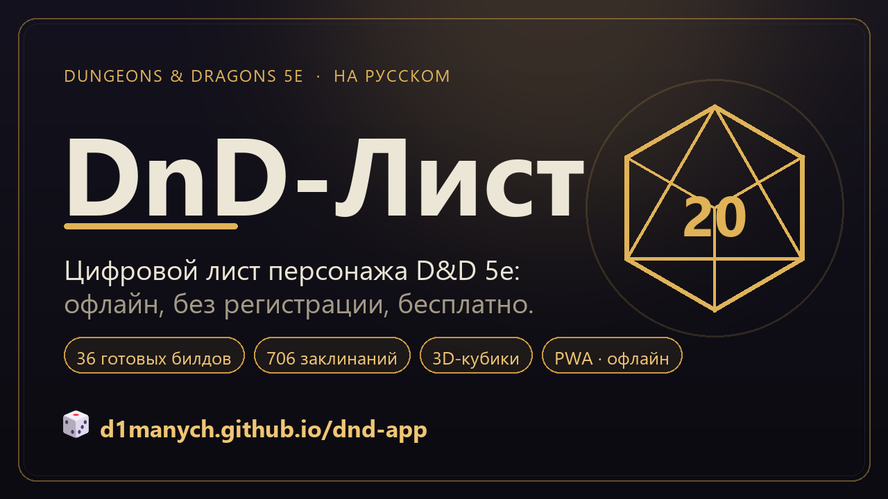
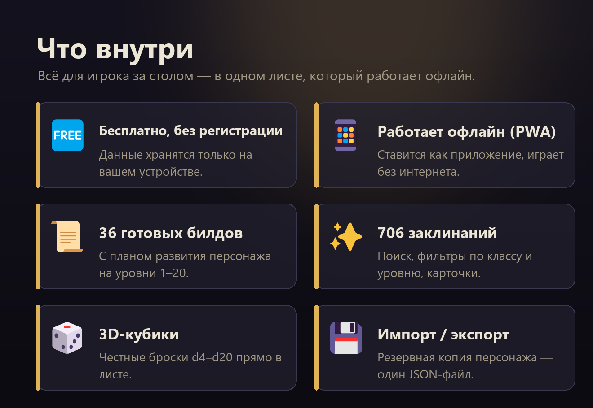

Я обычный игрок в D&D 5e — не мастер, не оптимизатор, не контент-мейкер. Просто человек, который любит сесть за стол с друзьями и покидать кубики.
Год назад моя пати решила собрать новых персонажей. Открыл DnD Beyond — английский, для нормального использования нужна подписка. Открыл несколько русскоязычных листов: половина не работает на телефоне, у других нет кубиков, у третьих — нельзя играть без интернета (а у меня половина сессий на даче без сети).
Тогда начал делать своё. Сначала чисто для себя — чтобы быстро открыть и не лазить по сайтам. Потом друзья по столу попросили доступ. Потом — друзья друзей. В какой-то момент стало ясно, что держать это «в столе» уже бессмысленно.
Это веб-приложение — цифровой лист персонажа для D&D 5e. Открывается по ссылке в любом браузере, ставится на телефон как обычное приложение (PWA) и работает без интернета. Регистрации нет: все данные хранятся прямо на вашем устройстве, ничего никуда не уходит.
Внутри всё, что нужно игроку за столом: характеристики и навыки, заклинания, инвентарь, боевой трекер, заметки и журнал сессий.

Сразу скажу, чтобы не было вопросов. Это мой первый опыт в разработке: профильного образования у меня нет, программировать раньше не учился — взялся просто из желания сделать удобный лист для своей пати. Без ИИ я бы это не потянул, поэтому использую его открыто:
Само приложение — обычный сайт без сборщика (ванильный JavaScript), который ставится как приложение и работает офлайн (PWA). ИИ для меня — инструмент, а не автор: что добавить, как оно должно работать, что починить и как это играется за реальным столом — решаю и проверяю я сам.
На телефоне можно добавить на главный экран («Установить приложение») — дальше работает офлайн.
Если зашло — поделитесь со своей пати. Для меня это лучшая благодарность.